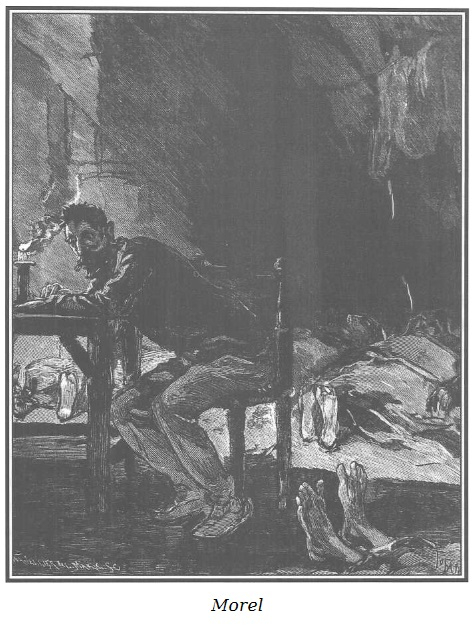
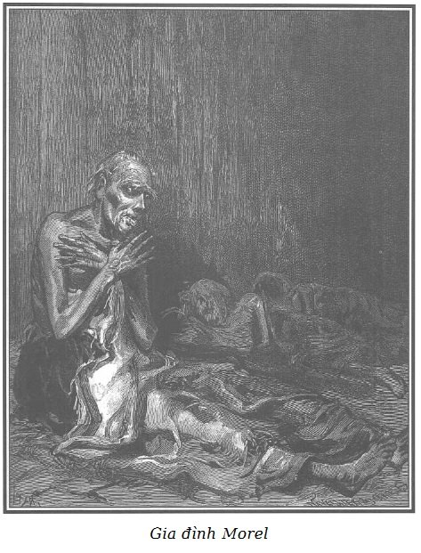

Bạn đọc có lẽ chưa quên một gia đình khốn khổ mà người chủ, thợ mài ngọc, tên là Morel chiếm tầng gác sát mái căn nhà phố Temple.
Chúng tôi xin đưa bạn đọc đến nơi ở thê thảm này.
Lúc này là năm giờ sáng.
Bên ngoài, sự im lặng thật là tuyệt đối, đêm tối mù, buốt lạnh, tuyết rơi.
Một ngọn nến, đặt trên một ván vuông nhỏ, giữa hai mẩu gỗ, le lói chiếu tầng gác sát mái tối om bằng thứ ánh sáng vàng nhạt, căn nhà nhỏ hẹp, lụp xụp hai phần ba che phủ bởi cái mái nhà dốc đứng tạo thành một góc rất nhọn với sàn nhà. Khắp nơi người ta thấy mặt dưới của những viên ngói màu lục nhạt.
Những vách thạch cao trát lại, đen sạm vì thời gian và đầy vết nứt nẻ, để lộ ra những nẹp gỗ bị mọt tạo thành những vách mỏng này; ở một ngách, cánh cửa đã long mở ra cầu thang.
Nền nhà, một màu không tên, hôi thối nhầy nhụa, rải rác đây đó một vài cọng rơm, ủng, quần áo rách, nhớp nhúa và những mảnh xương lớn mà con người nghèo khổ này mua lại ở những người bán thịt ôi để gặm những miếng sụn còn dính lại…*
Người ta thường gặp trong các khu đông dân những người bán lẻ thịt bê chết lúc sinh, thịt gia súc chết vì bệnh tật…
Một sự chểnh mảng quá mức như vậy lúc nào cũng tố cáo một phẩm hạnh xấu hoặc một sự khốn cùng lương thiện nhưng rất nặng nề, tuyệt vọng đến mức con người chán ngán, thoái hóa không còn cảm thấy cả ý chí, cả sức lực, cả nhu cầu thoát khỏi vũng bùn: anh ta chết gí ở đấy như một con thú trong hang.
Ban ngày, căn nhà ổ chuột này được soi sáng bởi một cửa mái hẹp, dài chiều ngang, trổ ra trong phần dốc của mái nhà, mang một khung kính mở ra đóng lại nhờ một thanh răng.
Một lớp tuyết dày phủ kín cửa mái ấy.
Ngọn nến đặt gần chính giữa tầng gác sát mái, trên bàn nghề của người thợ chiếu ra một vùng ánh sáng nhạt cứ mờ dần rồi chìm vào bóng tối bao trùm căn phòng, trong đó nổi bật lên một cách lờ mờ một vài bóng trăng trắng.
Trên bàn nghề, một chiếc bàn vuông nặng bằng gỗ sồi mộc, đẽo vuông một cách thô thiển hoen ố dầu mỡ, ngổn ngang lấp lánh, chói lòa một nhúm kim cương và hồng ngọc có độ lớn và ánh chói kỳ diệu.
Morel là thợ mài ngọc loại quý chứ không phải loại giả, như bác thường nói và như người ta cũng nghĩ như vậy về bác trong căn nhà nhỏ phố Temple. Nhờ lời nói dối vô hại là những đồ ngọc mà người ta giao cho bác không đáng giá mấy nên bác có thể cất giữ ở nhà mà không sợ bị mất trộm.
Bao nhiêu châu báu phó mặc cho một người trong cảnh cơ cực như vậy, chỉ việc ấy đã miễn cho chúng ta bàn luận về tính trung thực của bác Morel…
Ngồi trên một cái ghế đẩu không lưng, không thắng nổi mệt nhọc, tiết trời lạnh, và giấc ngủ, sau một đêm đông dài cặm cụi làm việc, bác ngả chiếc đầu nặng trĩu và đôi tay tê cóng lên bàn nghề, trán tì lên một chiếc đĩa mài lớn đặt nằm ngang trên bàn thường được khởi động bằng một bánh xe quay tay, một chiếc cưa thép loại tốt, một vài vật dụng khác rải rác bên cạnh. Người thợ thủ công, mà người ta chỉ trông thấy cái trán hói, xung quanh có tóc hoa râm, mặc một chiếc áo dệt kim màu nâu cũ, không có áo lót và một chiếc quần dài tồi tàn bằng vải thô, đôi giày vải rách bươm không đủ che kín hai bàn chân tím bầm đặt trên nền gạch.
Trong tầng gác sát mái trời rét đậm, tê buốt đến mức bác thợ mặc dù mệt lử, lịm đi trong trạng thái ngủ gật, đôi lúc toàn thân run lên.

.Chiều dài và sự tàn lụi của bấc đèn chỉ rõ là bác Morel đã thiu thiu ngủ được một lúc, người ta chỉ còn nghe tiếng thở bị dồn nén của bác; bởi vì bảy người khác cũng ở trong tầng gác sát mái này không ai ngủ được.
Vâng, trong tầng gác mái chật chội này, có tất cả tám người. Năm đứa con, đứa bé nhất mới bốn tuổi, đứa lớn nhất chưa đến mười hai tuổi mà mẹ chúng thì tàn tật.
Rồi còn một bà già tám mươi tuổi, đã lú lẫn, bà ngoại của chúng.
Trời lạnh buốt đến nỗi cả tám người chen chúc trong một không gian hẹp như vậy cũng không làm ấm lên được không khí giá băng; ấy cũng bởi tám tấm thân mảnh khảnh gầy gò, run rẩy, kiệt sức, từ đứa bé nhất đến bà cụ già tỏa ra quá ít calo, như các nhà bác học thường nói.
Trừ người cha thiếp đi một lúc do sức lực kiệt quệ, còn lại không ai ngủ được, không ngủ bởi vì cái rét, cái đói, bệnh tật làm họ mở mắt thật to.
Người ta không thể hình dung được giấc ngủ sâu, giúp phục hồi sức lực, quên đi khổ đau là hiếm hoi và quý giá đối với bác thợ nghèo đến mức độ nào. Bác tỉnh dậy nhẹ nhõm thảnh thơi, dũng cảm tiếp tục công việc nặng nhọc. Sau một trong những đêm tốt lành như vậy mà những người kém đức tin theo ngôn từ của tín đồ công giáo, cảm thấy một lòng biết ơn mơ hồ, nếu không phải đối với Chúa, thì ít ra cũng đối với… giấc ngủ, vì ai ca ngợi kết quả, hẳn phải ca ngợi nguyên nhân.
Nhìn quang cảnh nghèo khổ cùng cực của người thợ thủ công này, so với giá trị những đồ ngọc mà người ta giao cho bác, người ta thấy nổi bật lên một sự tương phản vừa làm não lòng, vừa nâng cao tâm hồn.
Con người này liên tục chứng kiến những cảnh thương tâm về nỗi khổ của những người thân thuộc, tất cả đè nặng lên đám người này từ cái đói đến cái điên, ấy thế mà người thợ vẫn tôn trọng các đồ ngọc này. Thứ của quý mà chỉ cần một viên thôi cũng đủ đưa vợ bác, con bác thoát khỏi những sự thiếu thốn cứ giết dần, giết mòn hết người này đến người khác.
Tất nhiên là bác làm công việc của bác, chỉ đơn giản là công việc của một người lương thiện, nhưng bởi vì công việc này đơn giản như vậy nên việc thực hiện nó có kém lớn lao và kém đẹp đẽ đi chăng? Những điều kiện trong đó nghĩa vụ được thực hiện chẳng đã làm cho sự thực hành nó càng đáng giá hơn sao?
Và người thợ thủ công này chịu nghèo khổ như vậy và trung thực như vậy kề ngay bên cạnh những vật quý giá này chẳng phải đã đại diện cho bộ phận đông đảo và rộng lớn những con người mặc dù luôn luôn chịu đựng những thiếu thốn, nhưng bình tĩnh, chuyên cần cam chịu, vẫn hằng ngày nhìn thấy, không thù ghét, không ham muốn, chói lòa lên trước mắt họ cảnh huy hoàng của những người giàu có sao?
Và phải chăng cũng rất cao quý, cũng rất yên tâm khi nghĩ rằng không phải là bạo lực, không phải sự khủng bố mà chỉ là lương tri đạo lý mới cản lại được biển người đáng sợ mà sự tràn bờ có thể nhấn chìm toàn xã hội, bất chấp luật lệ, bất chấp quyền lực, như đại dương nổi sóng bất chấp đê điều, thành lũy!
Và có thể nào không cảm thấy với tất cả sức mạnh của tâm hồn và trí óc với những trí tuệ hào hiệp chỉ yêu cầu rất ít chỗ đứng dưới ánh sáng mặt trời với bao nhiêu bất hạnh, bao nhiêu can đảm, bao nhiêu cam chịu!
Than ôi, hãy trở về hình mẫu rất thật của sự nghèo khổ kinh khủng mà chúng tôi thử phác họa trong sự trần trụi đáng sợ của nó. Người thợ mài ngọc chỉ còn một tấm nệm mỏng và một mảnh chăn cho bà mẹ già lú lẫn, ích kỷ, ngớ ngẩn và dữ tợn, không chịu để ai cùng nằm trên chiếc giường tồi tàn. Vào những ngày đầu mùa đông, bà cụ trở nên hung dữ và suýt làm nghẹt thở đứa cháu bé nhất đặt cạnh bà, một em bé bốn tuổi mới bị lao ít ngày và không tài nào chịu lạnh nổi trong tấm đệm rơm mà em nằm với các anh chị.
Lát nữa chúng tôi sẽ trình bày lối nằm này, thường được người nghèo thực hiện. So với họ, súc vật đã được đối xử rất xa hoa, người ta thay rơm đệm chuồng cho chúng.
Đó là bức tranh toàn cảnh tầng gác sát mái của người thợ thủ công, mỗi khi con mắt xuyên tới được vùng tranh tối tranh sáng mà những tia sáng yếu ớt của ngọn nến còn vươn tới được.
Dọc theo vách tường, ít ẩm ướt hơn những bức tường khác, đặt trên nền gạch vuông là chiếc đệm mà bà cụ già nằm nghỉ trên đấy.
Vì bà không chịu đội gì trên đầu, những sợi tóc bạc trắng cắt ngắn làm nổi rõ hình dáng của sọ bà và cái trán dẹt. Lông mày rậm, màu xám che rợp hai hốc mắt sâu, ở đó lóa sáng một cái nhìn man rợ, hai má hõm tái mét, nhăn nhúm dính vào gò má và những góc nổi của hàm. Nằm nghiêng một bên, co quắp người lại, cằm tới gần đầu gối, bà cụ run lên dưới một tấm chăn len xám, rất hẹp, không che lấp cả người bà, để thò ra hai chân gầy gò giơ xương và phần dưới của chiếc váy tả tơi mà bà mặc. Từ chiếc giường tỏa ra một mùi hôi thối.
Cách đầu giường bà cụ không xa và song song với bức tường là chiếc đệm dày làm giường cho năm đứa trẻ.
Và đây là cách xếp đặt:
Người ta rạch một đường ở mỗi đầu tấm vải, theo chiều dài của nó, rồi người ta luồn lũ trẻ vào trong một thứ rơm ẩm và nặng mùi, như vậy tấm vải trùm dùng cho chúng thay cả đệm cả chăn.
Một bên là hai bé gái, một em đang ốm nặng, run lập cập, bên kia là ba bé trai.
Mấy bé gái và bé trai đều mặc nguyên quần áo đi ngủ, nếu mấy mảnh rách tả tơi có thể gọi là quần áo.
Những mớ tóc dày nâu, xỉn màu, rối tung, xù lên mà mẹ các em để nguyên để các em đỡ lạnh, che đi một nửa gương mặt xanh xao, vàng vọt, đau đớn. Một trong những em bé trai dùng những ngón tay tê cứng kéo về phía mình đến tận cằm tấm vải bọc cho kín người hơn. Em kia, sợ tay lòi ra ngoài, lấy răng lập cập cắn giữ lấy tấm vải; em thứ ba nằm ép vào giữa hai anh.
Đứa nhỏ trong hai bé gái bị lao đục ruỗng, mệt nhọc áp khuôn mặt bé nhỏ, tội nghiệp, đã tím ngắt vì bệnh tật trên bộ ngực lạnh ngắt của người chị, một con bé lên năm tuổi đang cố gắng một cách vô hiệu ôm em trong đôi tay hòng làm cho nó ấm lên và chăm sóc nó với sự ân cần lo lắng.
Trên một chiếc đệm khác, đặt vào tận góc nhà ổ chuột này và đối diện với chiếc đệm của lũ trẻ, vợ bác thợ mài ngọc đang bị một cơn sốt âm ỉ làm suy yếu và bị một cố tật đau đớn khiến bác không thể nhỏm dậy được từ mấy tháng nay.
Madeleine Morel ba mươi sáu tuổi. Một chiếc khăn tay cũ bằng vải xanh quấn quanh chiếc trán dẹt càng làm nổi bật hơn nữa màu xanh vàng của khuôn mặt xương xẩu. Một vùng tròn màu nâu hiện quanh đôi mắt trũng xuống, mất hết tinh thần, những đường nứt rớm máu in hằn trên đôi môi nhợt nhạt.
Khuôn mặt sầu não, ủ rũ, những đường nét bình thường chứng tỏ một tính khí dịu hiền nhưng không sinh khí, không nghị lực, không cưỡng lại số phận hẩm hiu, mà cam chịu khuất phục, suy sụp và than vãn.
Ốm yếu trì trệ, thiển cận, bác đã giữ được mình lương thiện bởi vì chồng bác lương thiện. Nếu để bác tự xoay xở, bất hạnh có thể làm bác biến chất và đẩy bác làm càn. Bác yêu chồng, thương con, nhưng không có can đảm mà cũng không đủ nghị lực kìm giữ được những lời than vãn chua xót về nỗi bất hạnh của cả gia đình. Thường thường bác trai phải lao động vất vả, kiên trì và là chỗ dựa độc nhất của cả gia đình nhưng nhiều khi cũng phải tạm ngưng công việc để dỗ dành an ủi người bạn đời ốm yếu tội nghiệp.
Trên tấm khăn trải giường đã thủng đắp cho vợ, bác Morel muốn làm cho vợ ấm thêm, đã phủ vài chiếc áo quần cũ, vá víu chằng chịt đến nỗi người cầm đồ từ chối không nhận nữa.
Một cái lò, một cái chảo và một chiếc nồi đất sứt miệng, vài chiếc chén đã rạn, rải rác đây đó trên nền gạch vuông, một thùng gỗ, một tấm ván để xát xà phòng, một cái hũ sành đặt ở góc mái nhà, gần cái cửa đã long mộng mà gió thỉnh thoảng lại làm rung chuyển, đấy là tất cả những thứ mà gia đình ấy có.
Bức tranh ảo não ấy được một ngọn nến chiếu sáng, ngọn nến hắt hiu trước ngọn gió bấc luồn qua kẽ hở giữa các viên ngói, khi thì chiếu trên những cảnh khốn cùng những tia sáng nhạt và chập chờn, khi thì lấp lánh thành muôn nghìn màu sắc, khi thì long lanh muôn nghìn tia sáng hình lăng trụ chiếu vào mớ kim cương và hồng ngọc chói ngời đặt trên bàn nghề mà bác Morel đang ngủ gục.
Do một cử động chú ý máy móc, những đôi mắt của những kẻ bất hạnh này, tất cả đều lặng lẽ, tỉnh táo, từ bà cụ già đến đứa bé nhất chăm chú một cách tự nhiên đến người thợ thủ công, nguồn hy vọng độc nhất, nguồn trông cậy độc nhất của họ.
Trong niềm ích kỷ ngây thơ, họ lo ngại thấy bác thợ ngừng hoạt động và suy sụp dưới sức nặng của công việc.
Người mẹ nghĩ đến đàn con.
Những đứa con nghĩ đến nhau.
Bà cụ già lẫn dường như không nghĩ gì cả.

.Vậy mà, bà đột ngột nhổm dậy, khoanh đôi tay dài, khô và vàng như cây hoàng dương trước ngực, nhìn ánh sáng đèn, mắt hấp háy, rồi thong thả đứng dậy, kéo sau bà như một tấm vải liệm, tấm chăn rách mướp.
Bà cụ người cao lớn, đầu cắt tóc ngắn dường như nhỏ lại quá mức, một cử động co thắt làm rung động môi dưới bà, dày và trễ xuống, gương mặt xấu xí biểu lộ kiểu ngây dại dữ tợn.
Bà cụ lầm lũi đến gần bàn nghề như đứa bé chuẩn bị làm một việc xấu.
Khi đến tầm nến, bà đưa hai bàn tay run rẩy đến gần ngọn lửa, hai tay gầy guộc đến mức ánh sáng mà chúng che đi tạo nên màu tím nhạt.
Madeleine Morel từ trên chiếc giường tồi tàn theo dõi những cử động nhỏ nhặt nhất của bà cụ. Bà tiếp tục sưởi ánh sáng của ngọn nến vừa cúi đầu nhìn kĩ với một sự tò mò ngờ nghệch mấy viên hồng ngọc và kim cương đang lấp lánh trên bàn.
Quá chăm chú ngắm nghía, bà cụ lú lẫn không để bàn tay ở một khoảng cách cần thiết với ngọn lửa, bà bị bỏng và kêu lên một tiếng khàn khàn.
Nghe tiếng kêu, bác Morel giật mình thức giấc và vụt ngẩng đầu lên.
Bác khoảng bốn mươi tuổi, vẻ mặt cởi mở, thông minh và hiền từ nhưng nhăn nheo và hốc hác vì nghèo đói; một chòm râu ngả màu xám từ nhiều tuần lễ ở phía dưới khuôn mặt rỗ vì bệnh đậu mùa, những nếp nhăn sớm hằn trên trán hói của bác, mi mắt bác tấy đỏ lên vì thức quá nhiều.
Một hiện tượng khá phổ biến ở những người thợ thể tạng suy yếu mà lại phải làm một nghề tĩnh tại buộc họ suốt ngày ở trong một tư thế dường như không thay đổi đã làm biến dạng thân hình gầy gò của họ. Luôn luôn buộc phải cúi lom khom trước bàn nghề và nghiêng về một phía bên phải để khởi động chiếc đĩa mài, người thợ mài ngọc có thể nói đã bị đờ ra, bị sạn hóa trong tư thế mà bác phải giữ từ mười hai đến mười lăm giờ mỗi ngày, đã còng lưng xuống và lệch sang một bên.
Rồi cánh tay phải của bác liên tục sử dụng trong việc điều khiển nặng nhọc chiếc đĩa mài, đã có một sự phát triển cơ năng to lớn trong lúc cánh tay và bàn tay trái, luôn bất động và tì trên bàn nghề để đưa các mặt của viên ngọc kim cương chịu tác động của đĩa mài, đã bị đẩy vào một tình trạng gầy đét dễ sợ; đôi chân gầy guộc hầu như bị hủy diệt bởi thiếu hẳn cử động chỉ còn đỡ được tấm thân kiệt quệ mà tất cả thực thể, tất cả khả năng tồn tại, tất cả sức lực dường như chỉ tập trung vào phần duy nhất mà công việc luôn luôn cần đến.
Và như Morel đã nói với một sự cam chịu não nùng:
- Tôi đã nghĩ đến việc ăn cho tôi ít hơn là ăn để mà tăng cường cho cánh tay quay đĩa mài…
Giật mình thức giấc, người thợ mài ngọc đã mặt đối mặt với bà cụ già lú lẫn:
- Mẹ sao thế? Mẹ muốn gì vậy mẹ? - Morel hỏi bà, rồi bác nói thêm, giọng nhỏ hơn, sợ làm thức giấc cả nhà mà bác tin rằng đang ngủ. - Mẹ đi nằm đi, mẹ. Đừng làm ồn, Madeleine và các cháu đang ngủ.
- Con có ngủ đâu? Con đang cố làm cho Adèle ấm lên! - Đứa lớn hơn trong hai đứa gái lên tiếng.
- Con đói quá không ngủ được - một bé trai cũng tiếp lời - tối qua không phải lượt con đến ăn ở nhà cô Rigolette như các anh em của con.
- Các con tội nghiệp - bác Morel, lòng nặng trĩu bảo các con, - cha chắc rằng ít ra các con đều đã ngủ.
- Mình ạ, tôi sợ làm mình thức giấc, - Madeleine nói - nếu không tôi đã xin mình ngụm nước, tôi khát quá, tôi đang trong cơn sốt đây.
- Có ngay thôi, - người thợ rèn trả lời - nhưng mà mình hãy để tôi bảo mẹ đi nằm đã. Này, mẹ hãy để yên đấy những viên ngọc của con. - Bác nói với người mẹ già cứ muốn chộp lấy một viên hồng ngọc lớn mà sự lấp lánh của nó làm bà chú ý. - Này mẹ, mẹ đi nằm đi. - Bác nhắc lại.
- Được đấy. - Bà cụ lú lẫn vừa trả lời vừa chỉ viên ngọc quý mà bà thèm muốn.
- Chúng ta lại phải to tiếng với nhau bây giờ. - Morel cất cao giọng để làm bà mẹ vợ sợ hãi. Bác lấy tay gạt nhẹ tay bà.
- Trời ơi, trời ơi! Morel, mình ơi, sao tôi khát quá thế này. Mình hãy cho tôi uống nước.
- Nhưng mà mình bảo tôi làm sao bây giờ? Tôi không thể để mẹ đụng đến các viên ngọc của tôi, để mẹ lại làm mất một viên kim cương nữa như một năm trước, và có trời mới biết viên kim cương này làm chúng ta phải trả giá bao nhiêu nữa.
Và người thợ mài ngọc đưa tay lên trán, một cách buồn rầu, rồi bác bảo một đứa con:
- Félix, con lấy nước cho mẹ uống đi, bởi vì con không ngủ.
- Không, không, tôi sẽ đợi, nó sẽ bị cảm lạnh mất. - Madeleine nhắc lại.
- Con sẽ không lạnh hơn ở ngoài như đã lạnh trong đệm rơm. - Đứa bé vừa nói vừa đứng dậy.
- A, này xem nào, mẹ đã thôi chưa? - Morel cao giọng dọa nạt để đẩy bà cụ già không chịu rời bàn nghề và cứ khăng khăng muốn chiếm lấy một viên ngọc.
- Mẹ ơi, nước trong hũ đã đóng băng. - Félix kêu lên.
- Vậy thì đập băng ra. - Madeleine bảo.
- Nó dày quá, con chịu thôi.
- Morel, mình ơi, mình đập băng ở trong hũ đi, - Madeleine nói với giọng ảo não và sốt ruột - bởi tôi chẳng có gì uống ngoài nước, ít ra cũng cho tôi uống một chút. Mình để tôi chết khát mất.
- Ôi, trời ơi! Đừng nóng thế, mình bảo tôi làm sao bây giờ, mẹ mình đang bận tay tôi. - Người thợ mài ngọc khốn khổ trả lời.
Bác không thể làm cách nào gỡ bà cụ lú lẫn ra được. Bà cụ bắt đầu nổi giận vì sự kháng cự đó, và gầm lên giận dữ.
- Mình hãy bảo mẹ mình đi, - Morel bảo vợ - đôi lúc mẹ nghe lời mình, mình ạ!
- Mẹ ơi, mẹ đi nằm đi. Nếu mẹ nghe con, con sẽ lấy cà phê mà mẹ rất thích cho mẹ.
- Á à. - Bà già tiếp tục, lần này vùng vằng cố chiếm viên hồng ngọc mà bà thèm muốn.
Morel từ tốn đẩy bà ra nhưng vô hiệu.
- Trời ơi, mình đã biết là mình không làm sao cho bà thôi được nếu mình không dùng roi dọa cho bà hoảng lên còn gì, - Madeleine cất cao giọng nói - chỉ có cách ấy mới làm bà yên lặng được.
- Phải làm như thế thật, nhưng mặc dầu bà lẫn, lấy roi dọa một bà cụ già, điều này làm tôi ghê sợ lắm. - Morel nói.
Rồi quay lại với bà già đang ra sức cắn bác và bác lấy một tay giữ lại, Morel dữ dội quát lên:
- Coi chừng roi nhé! Nếu bà không lập tức đi nằm ngay.
Những lời dọa nạt này vẫn vô hiệu.
Bác cầm chiếc roi dưới gầm bàn nghề lia đi lia lại rất mạnh để dọa bà già và bảo:
- Bà đi nằm ngay tức khắc, đi nằm ngay!
Nghe tiếng roi vun vút, bà cụ vội rời khỏi bàn nghề rồi dừng lại, làu bàu trong miệng và đưa mắt giận dữ nhìn chàng rể.
- Lên giường, lên giường! - Bác thợ nhắc lại, vừa tiến về phía bà vừa lấy roi ra.
Lúc này bà cụ mới thong thả vừa lùi về phía giường vừa giơ nắm tay về phía bác thợ.
Bác muốn chấm dứt cảnh tượng độc ác ấy để đi lấy nước cho vợ nên tiến sát gần bà cụ và một lần cuối đưa roi lia đi lia lại, tất nhiên là không để chạm vào người bà cụ và nhắc lại, giọng hăm dọa:
- Lên giường, ngay tức khắc!
Bà cụ già trong cơn sợ hãi, cất tiếng rú ghê rợn chồm lên trên nệm rồi thu mình trong đó như con chó trong ổ, luôn miệng gầm rú.
Lũ trẻ khiếp đảm, tưởng cha chúng đánh bà ngoại, vừa khóc vừa can:
- Đừng đánh bà ngoại, đừng đánh bà ngoại, cha ơi!
Không thể nào diễn tả nổi ấn tượng sầu thảm của cảnh tượng xảy ra trong đêm, kèm theo những tiếng van xin của lũ trẻ, với tiếng gầm rú giận dữ của bà già và những lời than đau đớn của người vợ.